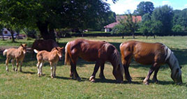

Âne,Pinocchio, arrivé dans un trafic en 1999,dans la cour de l’IMED,sous les applaudissements des enfants, n’imaginait pas qu’en qualité d’animal de compagnie, il aurait à laisser un peu de place à ses congénères, aussi ânes que lui, ou chevaux, ou poneys dans les enclos d'Iverny.
Douze ans plus tard, des chevaux Comtois, robustes animaux, sans doute n’aurait-il que le souvenir des collines du haut Doubs balayées par un vent froid et sec, sur les sommets desquels leurs larges sabots déchiraient le sol au rythme de leurs courses majestueuses, pendant qu’il s’echinait à porter avec d’autres, des ribambelles d’enfants dans le cadre d’activités de loisir à Bellherbe (25).
En Mai, à Iverny, Claudius (c’est son nom), cheval comtois, entrera dans le parc comme s’il avait été aménagé pour lui.

En Mai, à Iverny, Claudius (c’est son nom), cheval comtois, entrera dans le parc comme s’il avait été aménagé pour lui
Et c’est à Iverny que Pinocchio pourrait le rencontrer, s’il lui prenait l’envie, comme lorsqu’il était jeune, de quitter son enclos pour gambader le long du canal, poursuivi par les agents de l’équipe d’entretien, la police municipale, les pompiers et le directeur. C’était hier !
A l’inverse des romantiques, les chevaux ont peu d’inclination à la solitude. Aussi, un baudet du Poitou, copie conforme d’Urbain, au destin tragique, viendra combler l’isolement de son futur compagnon.
Nul doute que les jeunes internes qui habitent à Iverny apprécieront leur compagnie.